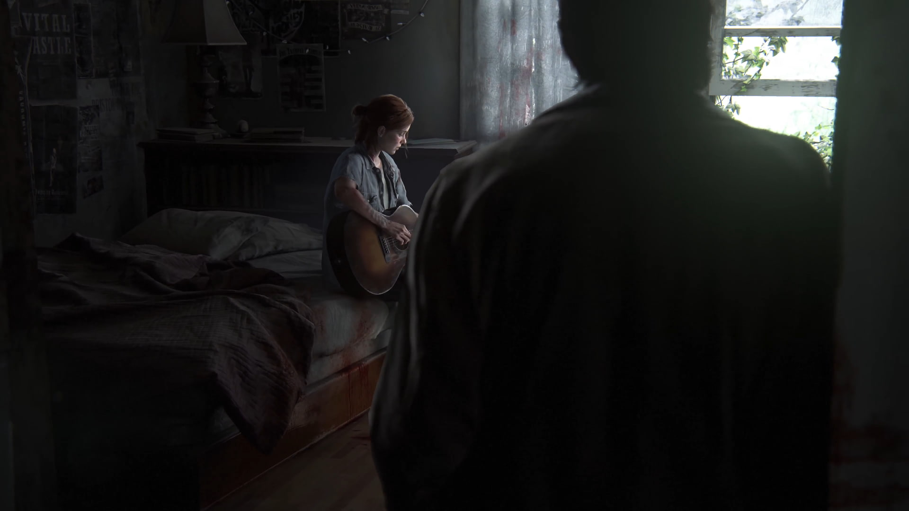

THE STORY
A TALE OF VENGEANCE
Five years after their dangerous journey across the post-pandemic United States, Ellie and Joel have settled down in Jackson, Wyoming. Living amongst a thriving community of survivors has allowed them peace and stability, despite the constant threat of the infected and other, more desperate survivors.

"I'm gonna find... and I'm gonna kill... every last one of them."